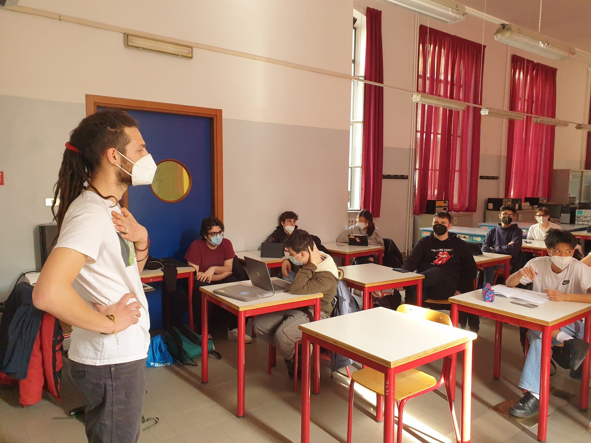
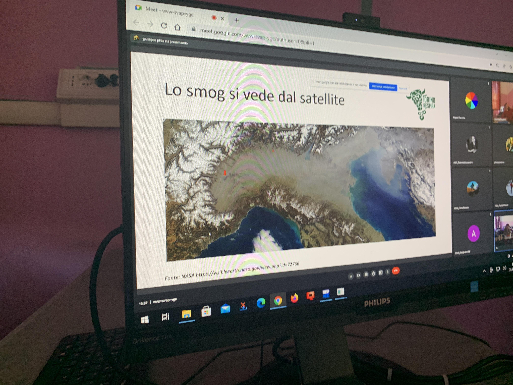
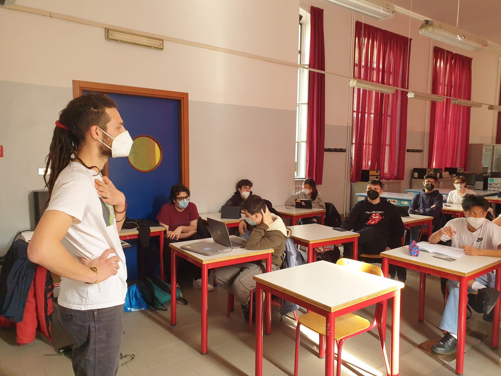
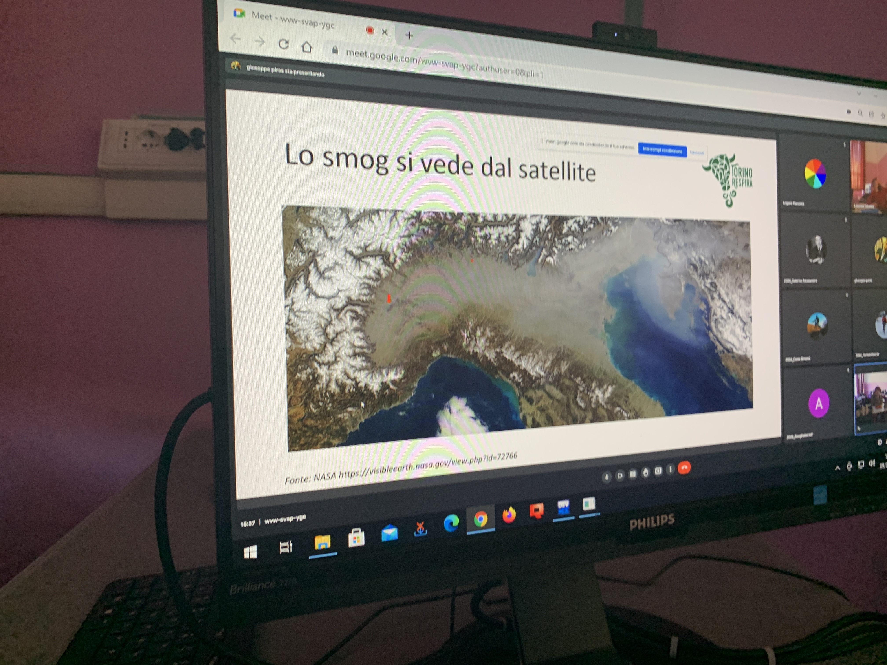
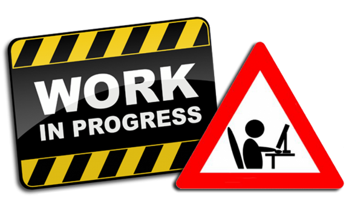

Immagini degli incontri
Ti trovi nella sezione immagini ed incontri del nostro sito web: qui troverai immagini degli incontri formativi che abbiamo avuto con gli esperti dell’associazione Torino Respira, Beppe Piras e Lorenzo Tabellini. Gli incontri si sono svolti durante l’anno scolastico 2021/2022. Abbiamo ricevuto dapprima informazioni riguardo l'inquinamento dell'aria e il funzionamento dei rilevatori Plume. Successivamente abbiamo definito insieme le fasi di realizzazione del progetto e abbiamo iniziato a lavorare, sia per effettuare le rilevazioniche che per elaborare i programmi informatici, che il sito web. Durante questi incontri abbiamo discusso di molte tematiche riguardo l’ambiente ma ci siamo concentrati soprattutto sull’impatto che l’inquinamento ha sulla nostra vita e su noi stessi. Nelle fasi conclusive dell'anno scolastico ci siamo focalizzati sull'analisi dei dati raccolti e la loro interpretazione.
 





Immagini dei rilevatori
Nelle prime foto si possono vedere i rilevatori Flow by Plume Labs che abbiamo utilizzato nel nostro progetto.
Il resto delle foto, invece, raffigurano i rilevatori fissi che abbiamo montato in alcuni punti precisi della scuola, come ad esempio sulle finestre che si affacciano su Via Rossini e su Corso San Maurizio.


Video del progetto
Video finale per del progetto RespirAVO, svolto in collaborazione con Torino Respira.
